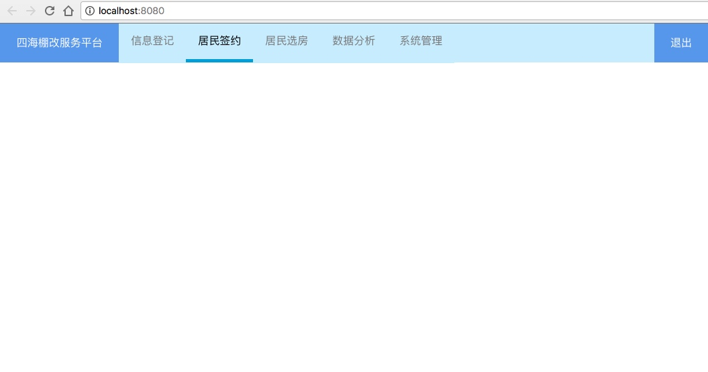
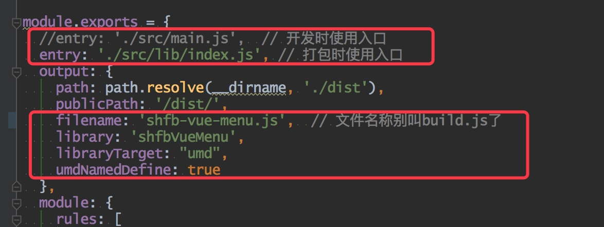
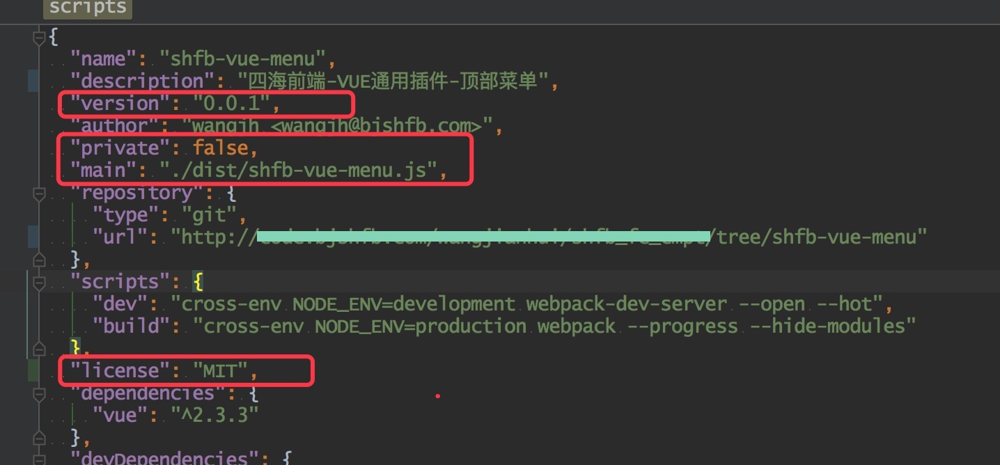
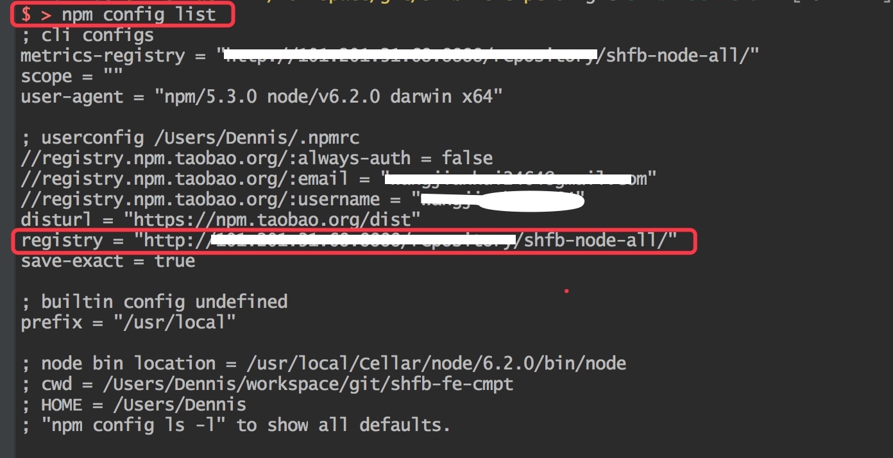
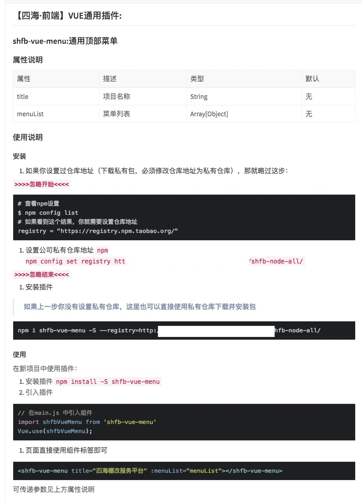
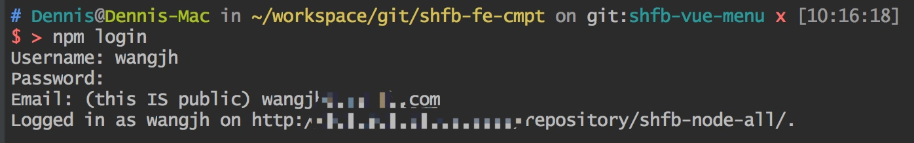
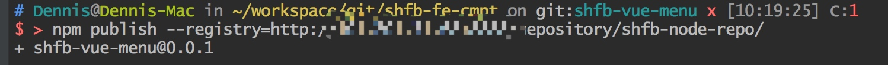
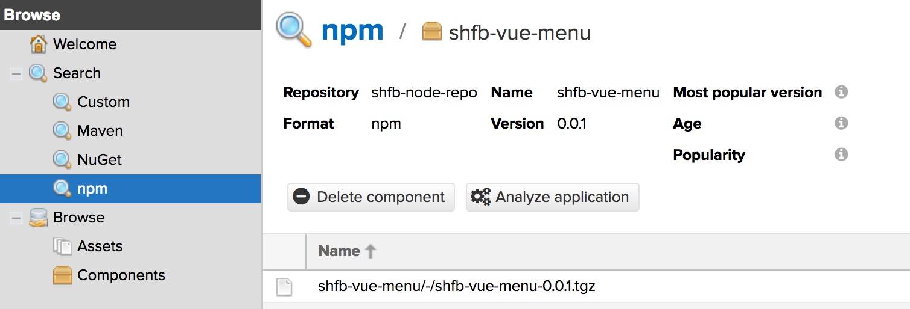
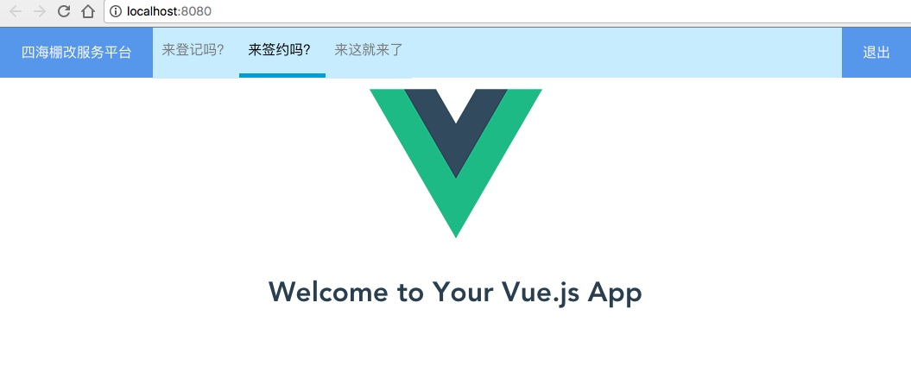

一、关于vue插件
对于vue插件，官网有介绍：vue插件开发
插件的导入形式有以下几种：
// ES6
import shfbVueMenu from 'shfb-vue-menu';
// 通过require 导入
var ShfbVueMenu = require('shfbVueMenu');
// 通过use挂载
Vue.use(shfbVueMenu);
// 或者直接导入js文件
<script src="./dist/shfb-vue-menu.js"></script>
二、vue插件规范
vue插件需要一个公开的install方法，里面包含我们需要的插件代码。
共有两个参数第一个是Vue的构造器，第二个是一个可选option对象。
import shfbVueMenu from "./shfb-vue-menu.vue"
const shfbvuemenu = {
install(Vue, options) {
Vue.component(shfbVueMenu.name, shfbVueMenu)
// shfbVueMenu 组件的name属性
// 类似通过 this.$xxx 方式调用插件的 其实只是挂载到原型上而已
// Vue.prototype.$xxx // 最终可以在任何地方通过 this.$xxx 调用
// 虽然没有明确规定用$开头 但是大家都默认遵守这个规定
}
};
这样开发完的组件就可以使用如下代码使用：
import shfbVueMenu from 'shfb-vue-menu'
Vue.use(shfbVueMenu);
前提你需要：npm install -S shfb-vue-menu
三、开发过程
3.1 开发环境搭建
使用vue脚手架，创建webpack-simple项目（不要用webpack，配置太复杂不需要）
$ vue init webpack-simple shfb-vue-menu
$ cd shfb-vue-menu
$ npm install -dd
$ npm run dev
工程目录如下：
./
├── README.md
├── dist // 打包发布的文件
│ ├── shfb-vue-menu.js
│ └── shfb-vue-menu.js.map
├── index.html
├── package-lock.json
├── package.json
├── src
│ ├── App.vue
│ ├── lib // 源码，也是主要编写代码的地方
│ │ ├── index.js
│ │ └── shfb-vue-menu.vue
│ └── main.js
├── tree.txt
└── webpack.config.js
我们为了看到开发过程中的效果，就创建了整个vue工程；其实开发只有lib内的文件就可以了。
3.2 业务代码编写
本次插件主要是讲解vue插件开发示例，所以业务代码比较简单，只有一个顶部导航菜单，而且是简单的。
shfb-vue-menu.vue <script>代码如下：
export default {
// name 必须的
name: 'shfb-vue-menu',
// 接受外部传入 菜单title、以及菜单列表
props: ['title', 'menuList'],
data () {
return {}
},
created () {
// Todo: 后续自己查询菜单列表，不接受外部传入
},
methods: {
clickMenu(item){
console.log(item);
}
}
}
开发过程中需要时刻查看效果：
App.vue 中如此使用：
<div id="app">
<shfb-vue-menu title="四海棚改服务平台" :menuList="menuList"></shfb-vue-menu>
</div>
export default {
name: 'app',
data () {
return {
menuList: [
{itemName: "信息登记", itemUrl: "http://test.bjshfb.com:3002", itemActive: ''},
{itemName: "居民签约", itemUrl: "http://test.bjshfb.com:3003", itemActive: 'active'},
{itemName: "居民选房", itemUrl: "http://test.bjshfb.com:3004", itemActive: ''},
{itemName: "数据分析", itemUrl: "http://test.bjshfb.com:3005", itemActive: ''},
{itemName: "系统管理", itemUrl: "http://test.bjshfb.com:3006", itemActive: ''}
]
}
}
}
3.3 查看开发效果

至此一个简单的插件就开发完成了。但是你以为这样就可以使用了吗？NO，你需要打包发布
3.4 发包准备工作
3.4.1 webpack.config.js配置调整

3.4.2 package.json配置调整

3.4.3 npm 配置调整

3.4.4 编写 README.md 说明

⚠️建议都去学习了解一下markdown语法。写文档需要。现在哪哪都是markdown
3.5 发布包，持续优化
发包的过程我们之前已经在其他文章中说过，这里只贴一下过程即可；不清楚的可以翻看之前文章。
3.5.1 登录私服仓库

3.5.2 发布包

3.5.3 查看是否发布成功
查看是否成功可以有很多形式，
1. npm info xxx // 可以查看包信息
2. 直接查看仓库。 仓库中已有，OK。

四、如何使用
其实上面已经有介绍，在新项目中使用插件：
4.1 安装插件
npm install -S shfb-vue-menu
4.2 引入插件
// 在main.js 中引入组件
import shfbVueMenu from 'shfb-vue-menu'
Vue.use(shfbVueMenu);
4.3 页面直接使用组件标签即可
<shfb-vue-menu title="四海棚改服务平台" :menuList="menuList"></shfb-vue-menu>
可传递参数见上方属性说明
4.4 引入插件的效果：
shfb-vue-menu安装使用效果：

总结
OK，至此这就是开发一个vue插件的全部过程，以及顺带又重新讲解了一下，发包的过程。
今天就到这里。